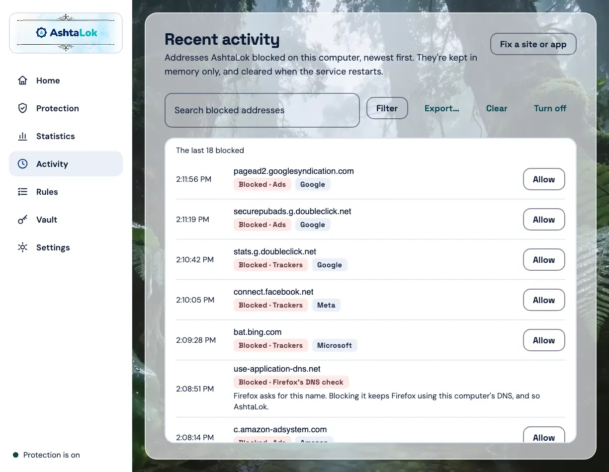
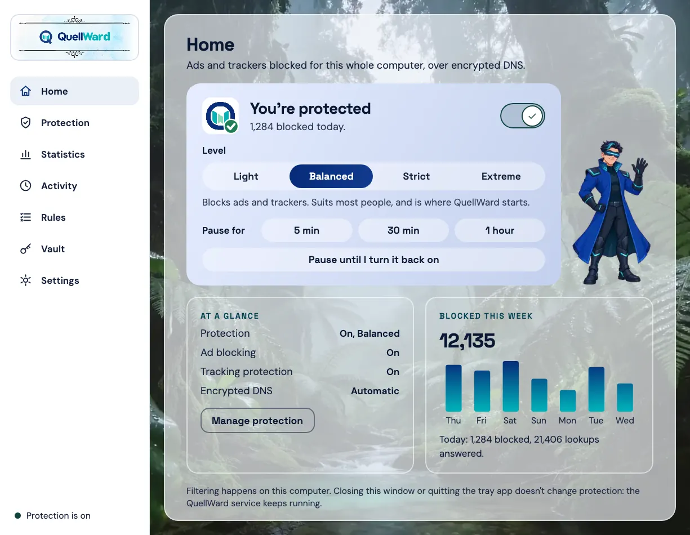
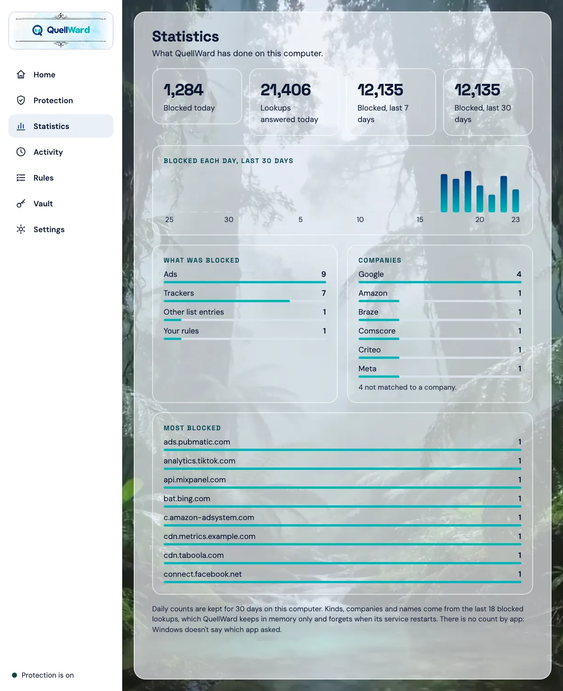
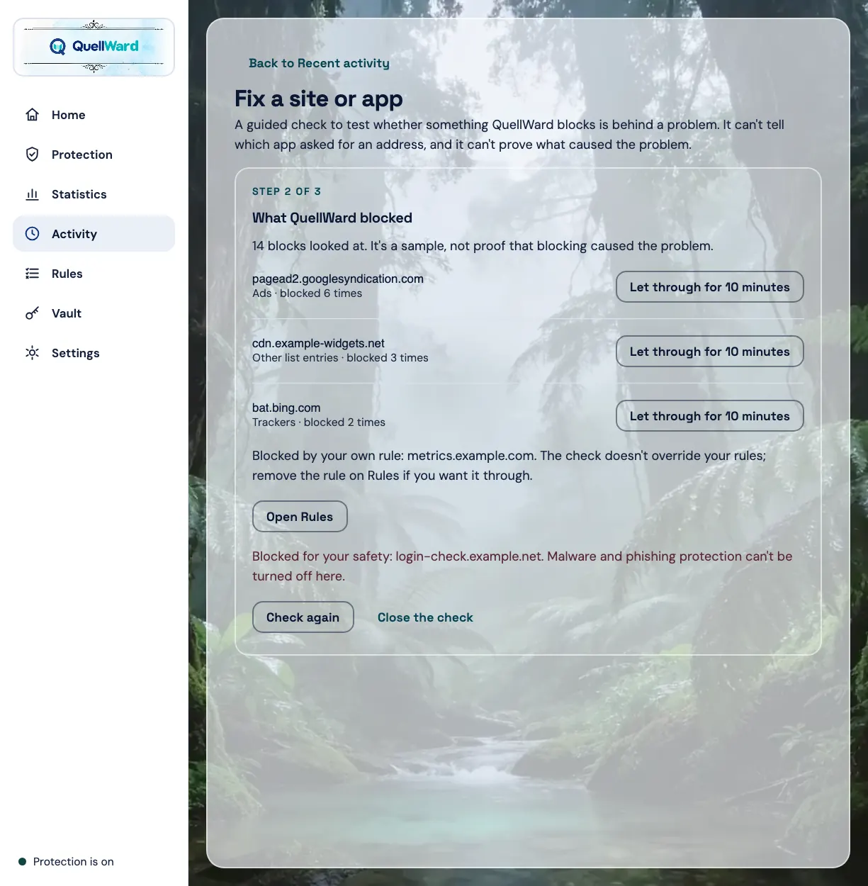

Every block, listed.
With the company behind it.
Encrypted DNS protection for every app on your Windows computer, decided on the computer itself.

Rook explains
Hi, I'm Rook.
Tap anything in the window and I'll tell you what it does.
The Windows app in testing, with sample data. Tap the sidebar, the switch, a level or a pause button. There's no download yet.

With the company behind it.

By kind and by company.

Finds what was blocked while it broke.
There's no date. They come after Android phones and tablets.
Not at first. They start with encrypted DNS protection; the rest isn't decided.